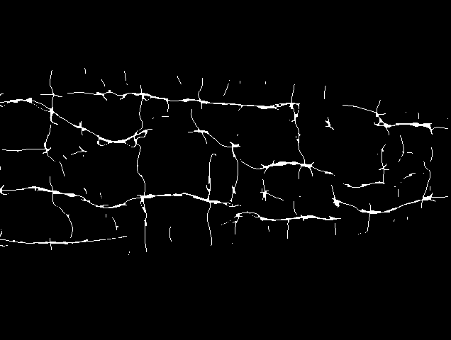
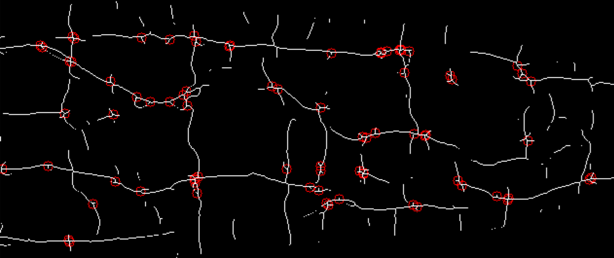
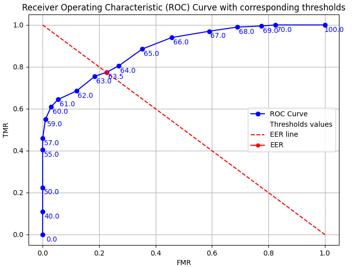

Projekt: Extrakce krevního řečiště prstu za pomoci deterministických algoritmů
Popis projektu
V rámci projektu se extrahují vzory žíly z obrázku prstu metodou Maximum Curvature. Pro každou dvojici obrázků se změří míra překryvu a spočtou jejich rysy jako bifurkace či křížení, které lze srovnávat za účelem rozpoznávání. Výsledné skóre porovnání je normalizováno do intervalu <0, 100>, kde 0 je perfektní shoda.
Analýza rysů a výkonnost systému
Systém ze vzoru žil detekuje následující rysy:
- Bifurkace: Místa, kde se žíly rozdvojují.
- Křížení: Body, kde se žíly kříží.
- Koncové body: Místa, kde žíly končí.
- Lokální histogramy: Histogramy, které poskytují informace o textuře a kontrastu vzoru žil.
Výsledky projektu
Původní obrázek prstu

Původní obraz ruky.
Extrahovaný vzor žil
Extrahovaný vzor žil na základě metody Maximum Curvature.
Bifurkace a křížení ve vzoru žil
Zobrazení detekovaných bifurkací a křížení v extrahovaném vzoru žil.
Vyhodnocení výkonnosti

ROC křivka ukazující výkonnost systému při rozpoznávání.